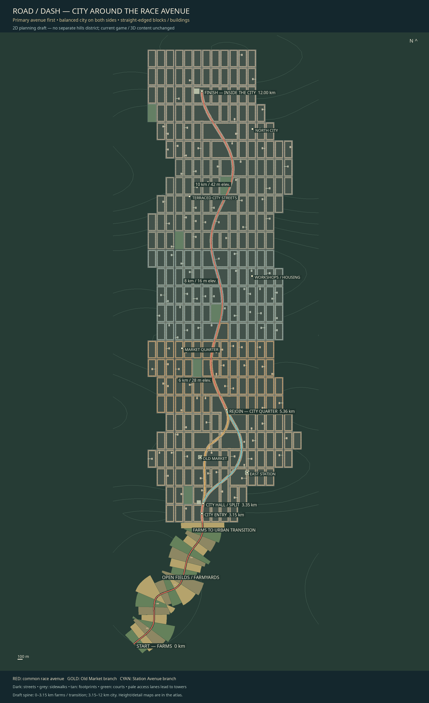
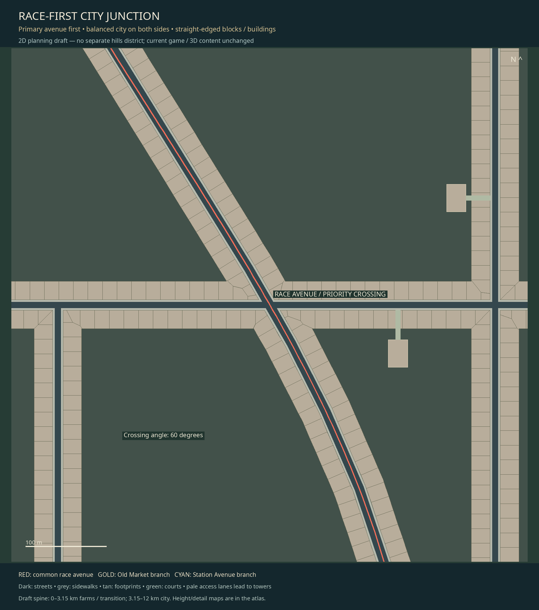
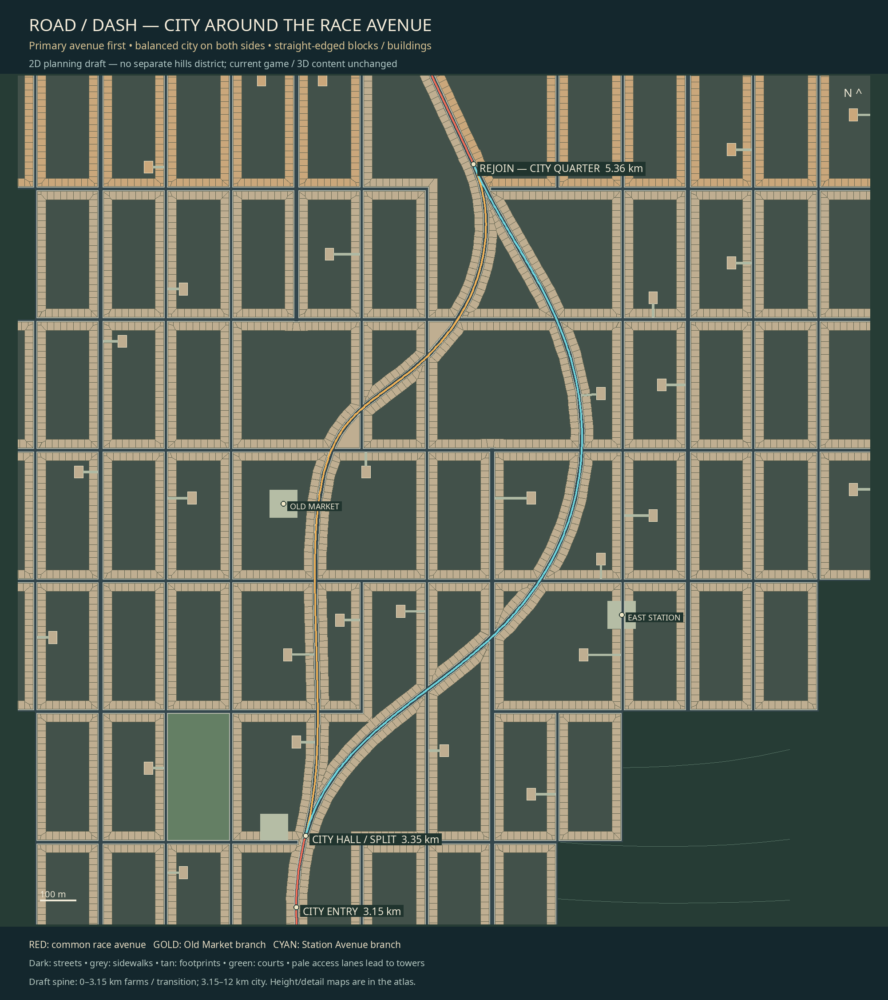
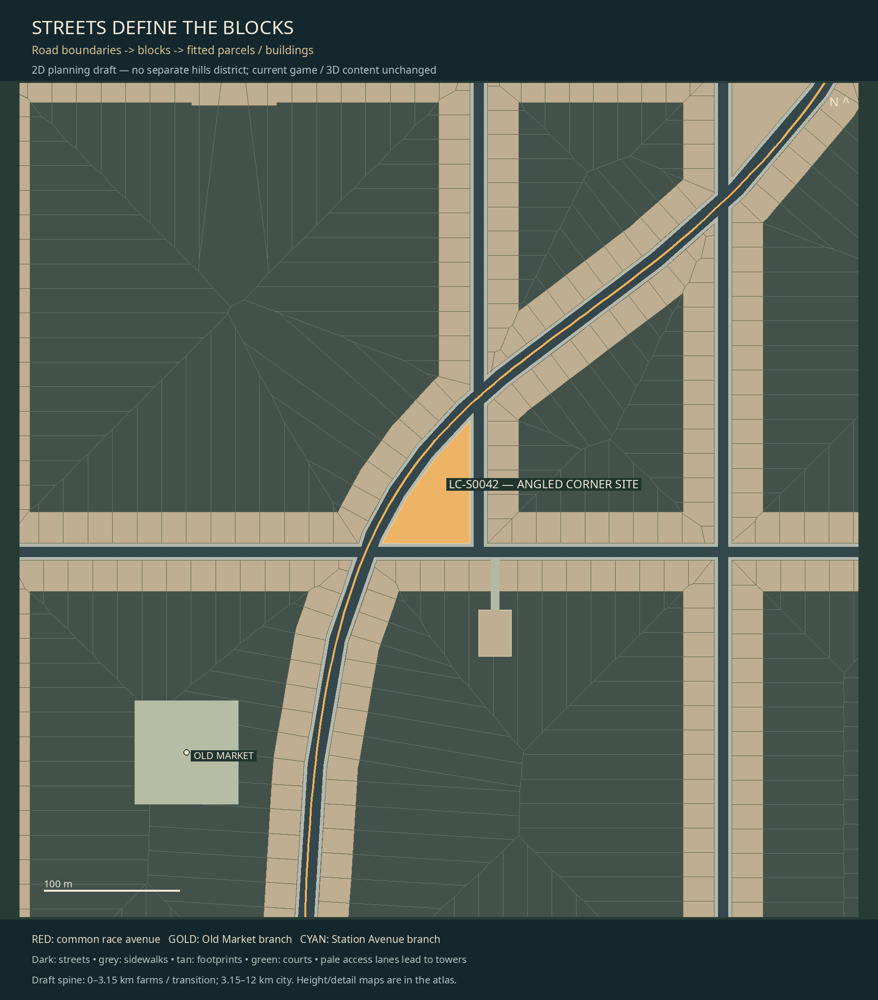
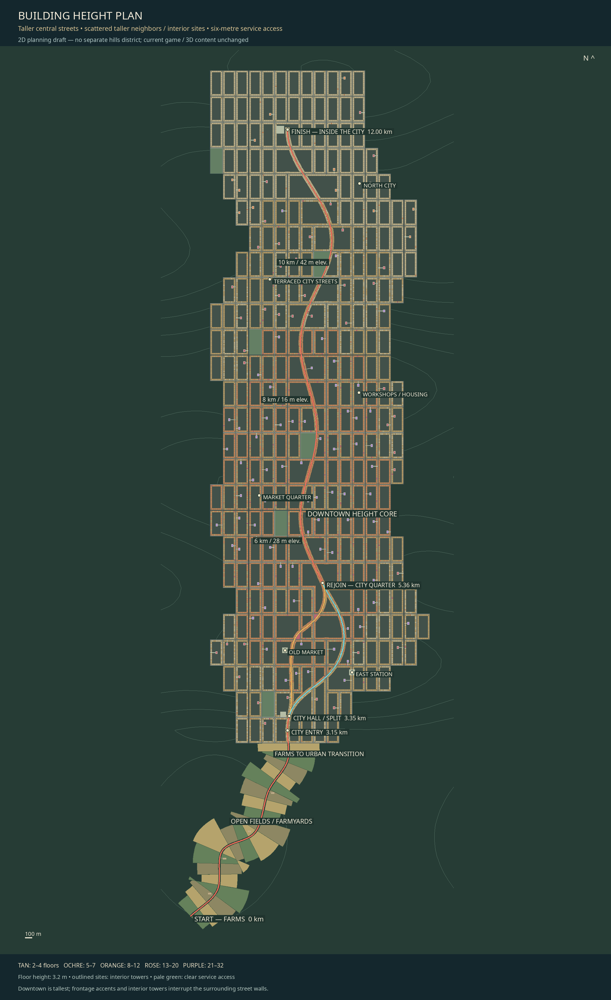
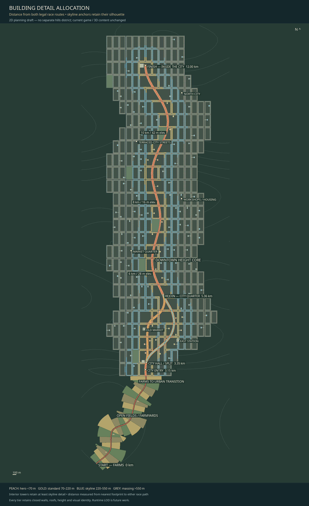
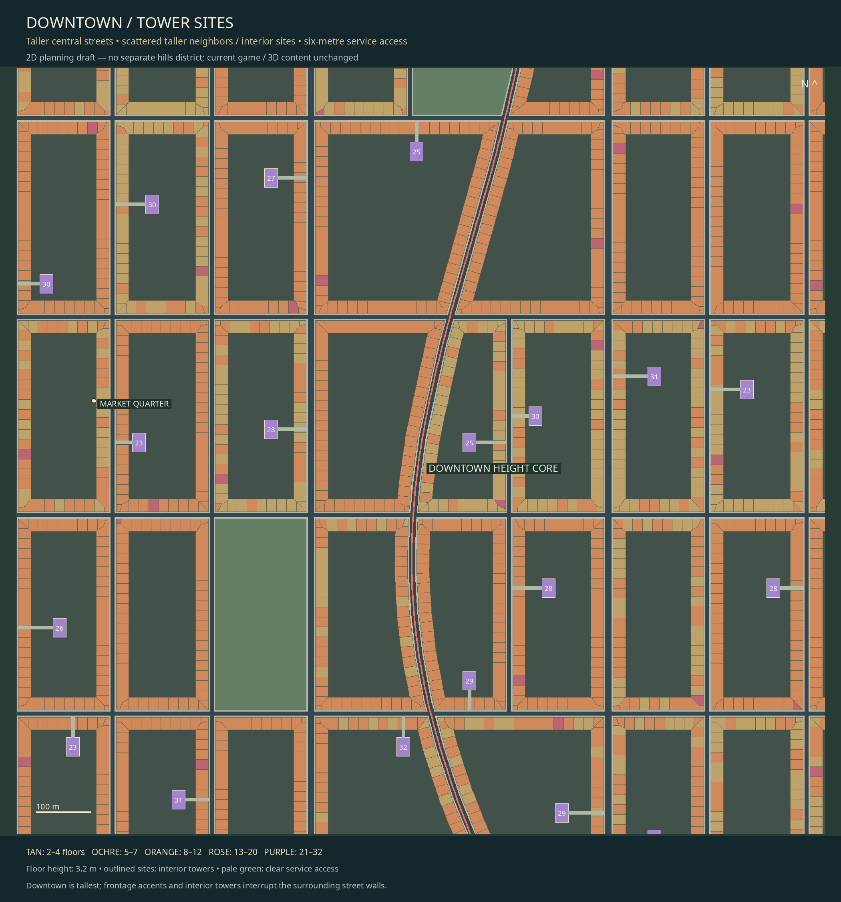
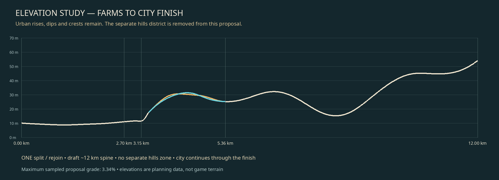

Whole route: farms → long city → urban finish
One split, two alternatives, rejoin near the first city quarter. Curved roads and proposed street elevation. No hills district. Layout only.

Race-first junction detail

First city quarter / split

Street-cut corner site / actual block from this map

Building height plan

Authored detail by race-road distance

Downtown towers / access

Elevation profile

Zoomable vector map · Layout / height / route data